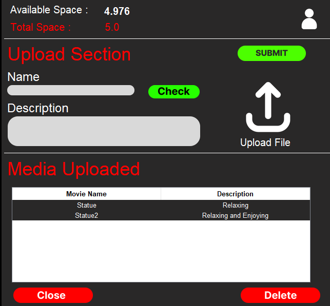

V-Media Player
V-Media Player
V-Media Player
V-Media Player
V-Media Player blends local and cloud playback into one app — stream from 5GB of cloud storage or play downloaded media, and never lose your place in a scene again.
V-Media Player is built using Python and the VLC library, designed to work seamlessly across both modes — locally for downloaded media, and on the cloud for content streamed directly from storage.
Users can upload up to 5GB of media and stream it directly, without ever needing a separate app for local versus cloud playback.
Three features that solve the part every other player gets wrong — losing your place.
Play downloaded media offline, or stream directly from your 5GB cloud storage — same app, same interface.
Save your favorite movie scenes or resume exactly where you left off — no more scrubbing to find your spot.
Signature FeatureYour saved timestamps are stored securely on your local device in lightweight, portable JSON format.
.png)

Curious about the cloud/local sync, VLC integration, or the JSON bookmarking system? Let's talk.
Get in Touch